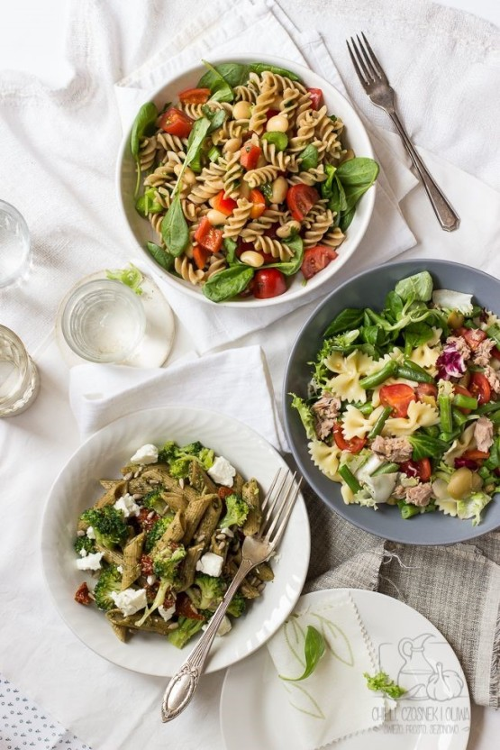

운동을 하는 사람은 본인 체중의 1.5~2배 가까이 되는 단백질을 섭취해야한다. 내 현재 몸무게는 66KG~67KG 정도 나가고 있으며, 즉 나는 최소 99~최대 130 에 해당하는 단백질을 섭취해야한다.
내 현재 스케줄에 맞춰서 최소한 2022년안에는 이식단을 맞춰서 시행하는것이 좋을수있다. 예상하고 있는 식단을 한다면 하루 총 섭취가능한 단백질은 최소 110~130 으로 충분히 많은 단백질을 섭취 할수 있다. 단백질 뿐만아니라 다른영양성분도 확인해보자.